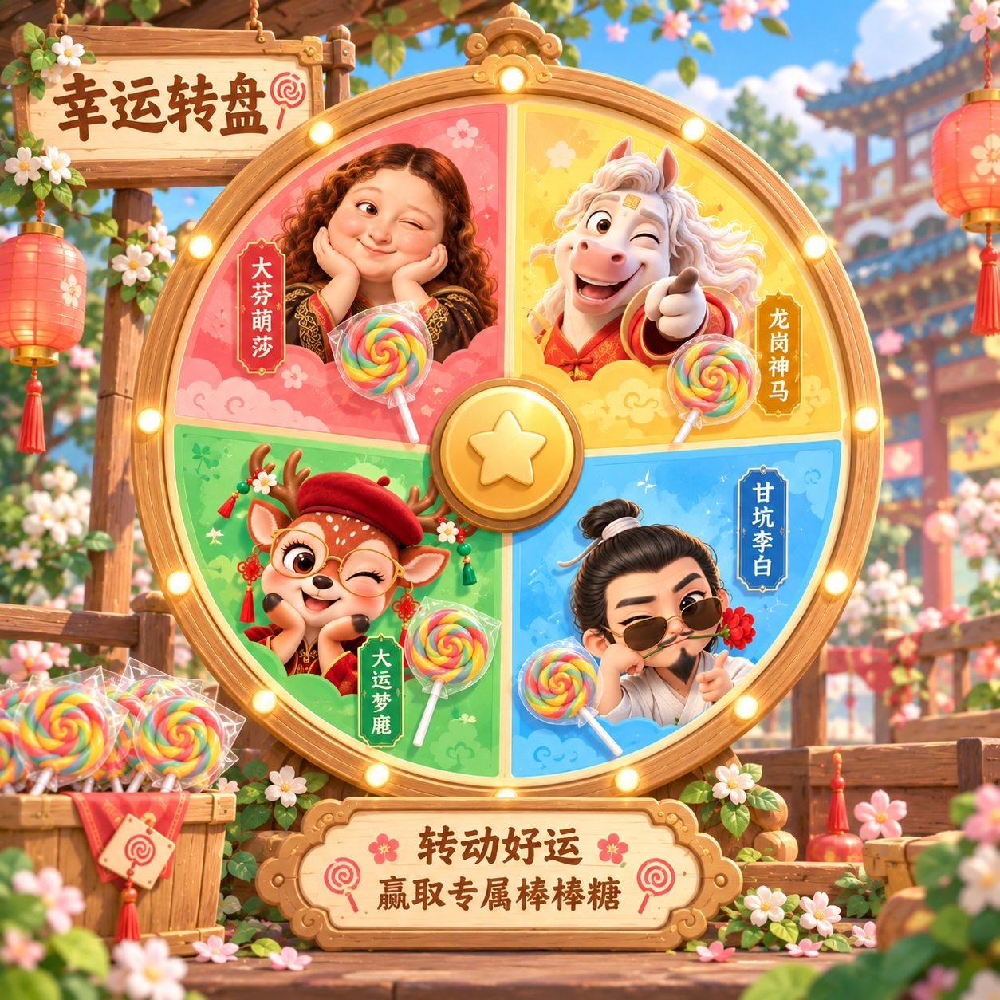

正在点亮古镇……
灯影古镇
女娲补天遗石所化 · 四灵入镇
照住按钮 1.5 秒 · 光圈充满即开始
？
特征
行为
习性
照住其他红金身影会被提醒并扣分
都看仔细了？照住按钮，光圈充满即出发
照住卡片 · 翻开灵韵卷宗
幸运大转盘
四灵归位 · 通关谢礼，仅此一次

照住中间的星星 · 光圈充满即开转
机会仅此一次 · 抽中的棒棒糖通关后找工作人员领取
补天功成
女娲抬起头，看见了人间灯火。
称号 · 补天者
古镇的灯火，今夜为你长明。
四印已齐 · 自由选关
灵光偏好
出没场景
所属灵印
照住「返回」· 光圈充满即回到之前画面
灯灵寻回！
点击角色卡，查看角色详情。
找到全部角色，可以获得奖励！
重燃梦灯？
清除全部进度——灵印、角色卡与称号都将归还夜色，故事从头讲起。
设 置